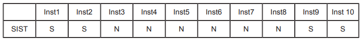
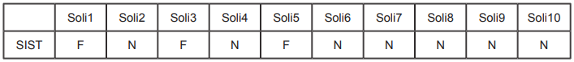
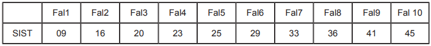

Métricas de confiabilidade de software dizem respeito à probabilidade de um componente de software produzir uma saída incorreta. Originalmente as métricas de confiabilidade foram criadas para componentes de hardware, consistindo em desgaste mecânico, aquecimento elétrico e fatores físicos relacionados aos componentes. Não há desgaste em componentes de software, que podem, inclusive, continuar operando mesmo após a produção de um resultado incorreto.
Observe os quadros a seguir, a fim de identificar algumas métricas de confiabilidade e disponibilidade de um dado sistema SIST.
Quadro 1
FONTE: Provas e Gabaritos Enade
Em que S indica que SIST estava disponível no instante de tempo (InstX) de número X e
N indica que o SIST não estava disponível no instante de tempo (InstX) de número X.
Quadro 2
FONTE: Provas e Gabaritos Enade
Em que F indica que SIST falhou quando se fez a ele a solicitação (SoliX) de número X e
N indica que o SIST não falhou quando se fez a ele a solicitação (SoliX) de número X.
Quadro 3
FONTE: Provas e Gabaritos Enade
O valor indica o instante, em uma dada unidade de tempo, em que ocorreu a falha (FalX) de número X.
Assinale a alternativa que corresponde, respectivamente, aos valores das métricas disponibilidade (em porcentagem), taxa de ocorrência de falha (em porcentagem) e tempo médio entre falhas (em unidade de tempo).